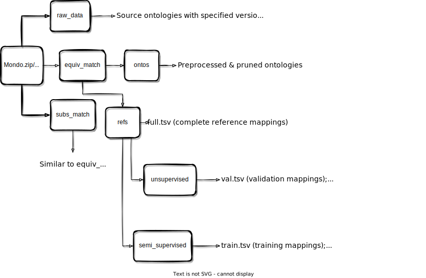
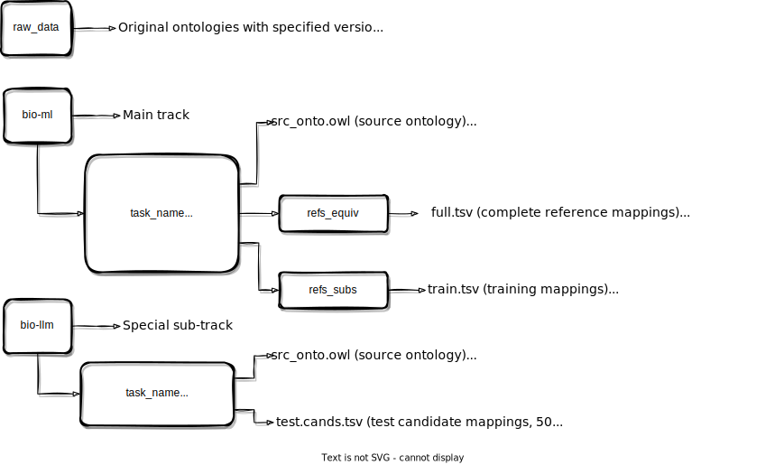

Bio-ML: A Comprehensive Documentation
paper
Paper for Bio-ML: Machine Learning-Friendly Biomedical Datasets for Equivalence and Subsumption Ontology Matching (ISWC 2022). It was nominated as the best resource paper candidate at ISWC 2022.
@inproceedings{he2022machine,
title={Machine Learning-Friendly Biomedical Datasets for Equivalence and Subsumption Ontology Matching},
author={He, Yuan and Chen, Jiaoyan and Dong, Hang and Jim{\'e}nez-Ruiz, Ernesto and Hadian, Ali and Horrocks, Ian},
booktitle={The Semantic Web--ISWC 2022: 21st International Semantic Web Conference, Virtual Event, October 23--27, 2022, Proceedings},
pages={575--591},
year={2022},
organization={Springer}
}
Overview
\(\textsf{Bio-ML}\) is a comprehensive ontology matching (OM) dataset that includes five ontology pairs for both equivalence and subsumption ontology matching. Two of these pairs are based on the Mondo ontology, and the remaining three are based on the UMLS ontology. The construction of these datasets encompasses several steps:
- Ontology Preprocessing: This phase involves verifying the integrity of the ontology and eliminating deprecated or superfluous classes.
- Ontology Pruning: In this stage, a sub-ontology is obtained in accordance with a list of preserved class IRIs. For Mondo ontologies, class preservation is based on reference mappings, while for UMLS ontologies, it relies on semantic types (see Ontology Pruning).
- Subsumption Mapping Construction: Reference subsumption mappings are built from reference equivalence mappings, subject to target class deletion. To clarify, if an equivalence mapping is utilised for constructing a subsumption mapping, its corresponding target ontology class will be discarded to enforce direct subsumption matching (see Subsumption Mapping Construction).
- Candidate Mapping Generation: For the purpose of evaluating an Ontology Matching (OM) system using ranking-based metrics, we generate a list of negative candidate mappings for each reference mapping by employing various heuristics (see Candidate Mapping Generation).
- Locality Module Enrichment (NEW
 ): Newly introduced in the OAEI 2023 version, the pruned ontologies are enriched with classes that serve as context (annotated as not used in alignment) for existing classes, leveraging the locality module technique (access the code). OM systems can use these supplemental classes as auxiliary information while excluding them from the alignment process. These additional classes will also be omitted from the final evaluation.
): Newly introduced in the OAEI 2023 version, the pruned ontologies are enriched with classes that serve as context (annotated as not used in alignment) for existing classes, leveraging the locality module technique (access the code). OM systems can use these supplemental classes as auxiliary information while excluding them from the alignment process. These additional classes will also be omitted from the final evaluation. - Bio-LLM: A Special Sub-Track for Large Language Models (NEW ): Another addition to the OAEI 2023 version, we introduced a unique sub-track for Large Language Model (LLM)-based OM systems. This is achieved by extracting small but challenging subsets from the NCIT-DOID and SNOMED-FMA (Body) datasets (see OAEI Bio-LLM 2023).
Important Links
-
Dataset Download (License: CC BY 4.0 International):
- OAEI 2022: https://doi.org/10.5281/zenodo.6946466 (see OAEI Bio-ML 2022 for detailed description).
- OAEI 2023: https://doi.org/10.5281/zenodo.8193375 (see OAEI Bio-ML 2023 for detailed description).
-
Complete Documentation: https://krr-oxford.github.io/DeepOnto/bio-ml/ (this page).
- Reference Paper: https://arxiv.org/abs/2205.03447 (revised arXiv version).
- Official OAEI Page: https://www.cs.ox.ac.uk/isg/projects/ConCur/oaei/index.html (OAEI participation and results).
Ontology Pruning
In order to derive scalable Ontology Matching (OM) pairs, the ontology pruning algorithm propoased in the \(\textsf{Bio-ML}\) paper can be utilised. This algorithm is designed to trim a large-scale ontology based on certain criteria, such as involvement in a reference mapping or association with a particular semantic type (see UMLS data scripts). The primary goal of the pruning function is to discard irrelevant ontology classes whilst preserving the relevant hierarchical structure.
More specifically, for each class, denoted as \(c\), that needs to be removed, subsumption axioms are created between the parent and child elements of \(c\). This step is followed by the removal of all axioms related to the unwanted classes.
Once a list of class IRIs to be removed has been compiled, the ontology pruning can be executed using the following code:
from deeponto.onto import Ontology, OntologyPruner
# Load the DOID ontology
doid = Ontology("doid.owl")
# Initialise the ontology pruner
pruner = OntologyPruner(doid)
# Specify the classes to be removed
to_be_removed_class_iris = [
"http://purl.obolibrary.org/obo/DOID_0060158",
"http://purl.obolibrary.org/obo/DOID_9969"
]
# Perform the pruning operation
pruner.prune(to_be_removed_class_iris)
# Save the pruned ontology locally
pruner.save_onto("doid.pruned.owl")
Subsumption Mapping Construction
Ontology Matching (OM) datasets often include equivalence matching, but not subsumption matching. However, it is feasible to create a subsumption matching task from an equivalence matching task. Given a list of reference equivalence mappings, which take the form of \({(c, c') | c \equiv c' }\), one can construct reference subsumption mappings by identifying the subsumers of \(c'\) and producing \({(c, c'') | c \equiv c', c' \sqsubseteq c'' }\). We have developed a subsumption mapping generator for this purpose.
from deeponto.onto import Ontology
from deeponto.align.mapping import SubsFromEquivMappingGenerator, ReferenceMapping
# Load the NCIT and DOID ontologies
ncit = Ontology("ncit.owl")
doid = Ontology("doid.owl")
# Load the equivalence mappings
ncit2doid_equiv_mappings = ReferenceMapping.read_table_mappings("ncit2doid_equiv_mappings.tsv") # The headings are ["SrcEntity", "TgtEntity", "Score"]
# Initialise the subsumption mapping generator
# and the mapping construction is automatically done
subs_generator = SubsFromEquivMappingGenerator(
ncit, doid, ncit2doid_equiv_mappings,
subs_generation_ratio=1, delete_used_equiv_tgt_class=True
)
Output:-
3299/4686 are used for creating at least one subsumption mapping. 3305 subsumption mappings are created in the end.
Retrieve the generated subsumption mappings with:
subs_generator.subs_from_equivs
Output:-
[('http://ncicb.nci.nih.gov/xml/owl/EVS/Thesaurus.owl#C9311', 'http://purl.obolibrary.org/obo/DOID_120', 1.0), ('http://ncicb.nci.nih.gov/xml/owl/EVS/Thesaurus.owl#C8410', 'http://purl.obolibrary.org/obo/DOID_1612', 1.0), ...]
See a concrete data script for this process at
OAEI-Bio-ML/data_scripts/generate_subs_maps.py.
The subs_generation_ratio parameter determines at most how many subsumption mappings can be generated from an equivalence mapping. The delete_used_equiv_tgt_class determines whether or not to sabotage equivalence mappings used for creating at least one subsumption mappings. If it is set to True, then the target side of an (used) equivalence mapping will be marked as deleted from the target ontology. Then, apply ontology pruning to the list of to-be-deleted target ontology classes:
from deeponto.onto import OntologyPruner
pruner = OntologyPruner(doid)
pruner.prune(subs_generator.used_equiv_tgt_class_iris)
pruner.save_onto("doid.subs.owl")
See a concrete data script for this process at
OAEI-Bio-ML/data_scripts/generate_cand_maps.py.
Note
In the OAEI 2023 version, the target class deletion is disabled as modularisation counteracts the effects of such deletion. For more details, refer to OAEI Bio-ML 2023.
Candidate Mapping Generation
To evaluate an Ontology Matching (OM) model's capacity to identify correct mappings amid a pool of challenging negative candidates, we utilise the negative candidate mapping generation algorithm as proposed in the Bio-ML paper. This algorithm uses idf_sample to generate candidates that are textually ambiguous (i.e., with similar naming), and neighbour_sample to generate candidates that are structurally ambiguous (e.g., siblings). The algorithm ensures that none of the reference mappings are added as negative candidates. Additionally, for subsumption cases, the algorithm carefully excludes ancestors as they are technically correct subsumptions.
Use the following Python code to perform this operation:
from deeponto.onto import Ontology
from deeponto.align.mapping import NegativeCandidateMappingGenerator, ReferenceMapping
from deeponto.align.bertmap import BERTMapPipeline
# Load the NCIT and DOID ontologies
ncit = Ontology("ncit.owl")
doid = Ontology("doid.owl")
# Load the equivalence mappings
ncit2doid_equiv_mappings = ReferenceMapping.read_table_mappings("ncit2doid_equiv_mappings.tsv") # The headings are ["SrcEntity", "TgtEntity", "Score"]
# Load default config in BERTMap
config = BERTMapPipeline.load_bertmap_config()
# Initialise the candidate mapping generator
cand_generator = NegativeCandidateMappingGenerator(
ncit, doid, ncit2doid_equiv_mappings,
annotation_property_iris = config.annotation_property_iris, # Used for idf sample
tokenizer=Tokenizer.from_pretrained(config.bert.pretrained_path), # Used for idf sample
max_hops=5, # Used for neighbour sample
for_subsumptions=False, # Set to False because the input mappings in this example are equivalence mappings
)
# Sample candidate mappings for each reference equivalence mapping
results = []
for test_map in ncit2doid_equiv_mappings:
valid_tgts, stats = neg_gen.mixed_sample(test_map, idf=50, neighbour=50)
print(f"STATS for {test_map}:\n{stats}")
results.append((test_map.head, test_map.tail, valid_tgts))
results = pd.DataFrame(results, columns=["SrcEntity", "TgtEntity", "TgtCandidates"])
results.to_csv(result_path, sep="\t", index=False)
See a concrete data script for this process at
OAEI-Bio-ML/data_scripts/generate_cand_maps.py.
The process of sampling using idf scores was originally proposed in the BERTMap paper. The annotation_property_iris parameter specifies the list of annotation properties used to extract the names or aliases of an ontology class. The tokenizer parameter refers to a pre-trained sub-word level tokenizer used to build the inverted annotation index. These aspects are thoroughly explained in the BERTMap tutorial.
Evaluation Framework
Our evaluation protocol concerns two scenarios for OM: global matching for overall assessment and local ranking for partial assessment.
Global Matching
As an overall assessment, given a complete set of reference mappings, an OM system is expected to compute a set of true mappings and compare against the reference mappings using Precision, Recall, and F-score metrics. With \(\textsf{DeepOnto}\), the evaluation can be performed using the following code.
Matching Result
Download an example of matching result file. The three columns, "SrcEntity", "TgtEntity", and "Score" refer to the source class IRI, the target class IRI, and the matching score.
from deeponto.align.evaluation import AlignmentEvaluator
from deeponto.align.mapping import ReferenceMapping, EntityMapping
# load prediction mappings and reference mappings
preds = EntityMapping.read_table_mappings(f"{experiment_dir}/bertmap/match/repaired_mappings.tsv")
refs = ReferenceMapping.read_table_mappings(f"{data_dir}/refs_equiv/full.tsv")
# compute the precision, recall and F-score metrics
results = AlignmentEvaluator.f1(preds, refs)
print(results)
The associated formulas for Precision, Recall and F-score are:
where \(\mathcal{M}_{pred}\) and \(\mathcal{M}_{ref}\) denote the prediction mappings and reference mappings, respectively.
Output:-
{'P': 0.887, 'R': 0.879, 'F1': 0.883}
For the semi-supervised setting where a small set of training mappings is provided, the training set should also be loaded and set as null (neither positive nor negative) with null_reference_mappings during evaluation:
train_refs = ReferenceMapping.read_table_mappings(f"{data_dir}/refs_equiv/train.tsv")
results = AlignmentEvaluator.f1(preds, refs, null_reference_mappings=train_refs)
When null reference mappings are involved, the formulas of Precision and Recall become:
As for the OAEI 2023 version, some prediction mappings could involve classes that are marked as not used in alignment. Therefore, we need to filter out those mappings before evaluation.
from deeponto.onto import Ontology
from deeponto.align.oaei import *
# load the source and target ontologies and
# extract classes that are marked as not used in alignment
src_onto = Ontology("src_onto_file")
tgt_onto = Ontology("tgt_onto_file")
ignored_class_index = get_ignored_class_index(src_onto)
ignored_class_index.update(get_ignored_class_index(tgt_onto))
# filter the prediction mappings
preds = remove_ignored_mappings(preds, ignored_class_index)
# then compute the results
results = AlignmentEvaluator.f1(preds, refs, ...)
Tip
We have encapsulated above features in the matching_eval function in the OAEI utilities.
However,
- The scores will be biased towards high-precision, low-recall OM systems if the set of reference mappings is incomplete.
- For efficient OM system development and debugging, an intermediate evaluation is required.
Therefore, the ranking-based evaluation protocol is presented as follows.
Local Ranking
An OM system is also expected to distinguish the reference mapping among a set of candidate mappings and the performance can be reflected in Hits@K and MRR metrics.
Warning
The reference subsumption mappings are inherently incomplete, so only the ranking metrics are adopted in evaluating system performance in subsumption matching.
Ranking Result
Download an example of raw (unscored) candidate mapping file and an example of scored candidate mapping file. The "SrcEntity" and "TgtEntity" columns refer to the source class IRI and the target class IRI involved in a reference mapping. The "TgtCandidates" column stores a sequence of tgt_cand_iri in the unscored file and a list of tuples (tgt_cand_iri, score) in the scored file, which can be accessed by the built-in Python function eval.
With \(\textsf{DeepOnto}\), the evaluation can be performed as follows. First, an OM system needs to assign a score to each target candidate class and save the results as a list of tuples (tgt_cand_class_iri, matching_score).
from deeponto.utils import read_table
import pandas as pd
test_candidate_mappings = read_table("test.cands.tsv").values.to_list()
ranking_results = []
for src_ref_class, tgt_ref_class, tgt_cands in test_candidate_mappings:
tgt_cands = eval(tgt_cands) # transform string into list or sequence
scored_cands = []
for tgt_cand in tgt_cands:
# assign a score to each candidate with an OM system
...
scored_cands.append((tgt_cand, matching_score))
ranking_results.append((src_ref_class, tgt_ref_class, scored_cands))
# save the scored candidate mappings in the same format as the original `test.cands.tsv`
pd.DataFrame(ranking_results, columns=["SrcEntity", "TgtEntity", "TgtCandidates"]).to_csv("scored.test.cands.tsv", sep="\t", index=False)
Then, the ranking evaluation results can be obtained by:
from deeponto.align.oaei import *
# If `has_score` is False, assume default ranking (see tips below)
ranking_eval("scored.test.cands.tsv", has_score=True, Ks=[1, 5, 10])
Output:-
{'MRR': 0.9586373098280843, 'Hits@1': 0.9371951219512196, 'Hits@5': 0.9820121951219513, 'Hits@10': 0.9878048780487805}
The associated formulas for MRR and Hits@K are:
where \(N\) is the number of reference mappings used for testing, \(rank_i\) is the relative rank of the reference mapping among its candidate mappings.
Tip
If matching scores are not available, the target candidate classes should be sorted in descending order and saved in a list, the ranking_eval function will compute scores according to the sorted list.
OAEI Bio-ML 2022
Below is a table showing the data statistics for the original Bio-ML used in OAEI 2022. In the Category column, "Disease" indicates that the data from Mondo mainly covers disease concepts, while "Body", "Pharm", and "Neoplas" denote semantic types of "Body Part, Organ, or Organ Components", "Pharmacologic Substance", and "Neoplastic Process" in UMLS, respectively.
Note that each subsumption matching task is constructed from an equivalence matching task subject to target ontology class deletion, therefore #TgtCls (subs) differs from #TgtCls.
| Source | Task | Category | #SrcCls | #TgtCls | #TgtCls(\(\sqsubseteq\)) | #Ref(\(\equiv\)) | #Ref(\(\sqsubseteq\)) |
|---|---|---|---|---|---|---|---|
| Mondo | OMIM-ORDO | Disease | 9,642 | 8,838 | 8,735 | 3,721 | 103 |
| Mondo | NCIT-DOID | Disease | 6,835 | 8,448 | 5,113 | 4,686 | 3,339 |
| UMLS | SNOMED-FMA | Body | 24,182 | 64,726 | 59,567 | 7,256 | 5,506 |
| UMLS | SNOMED-NCIT | Pharm | 16,045 | 15,250 | 12,462 | 5,803 | 4,225 |
| UMLS | SNOMED-NCIT | Neoplas | 11,271 | 13,956 | 13,790 | 3,804 | 213 |
The datasets, which can be downloaded from Zenodo, include Mondo.zip and UMLS.zip for resources constructed from Mondo and UMLS, respectively. Each .zip file contains three folders: raw_data, equiv_match, and subs_match, corresponding to the raw source ontologies, data for equivalence matching, and data for subsumption matching, respectively. The detailed file structure is illustrated in the figure below.

OAEI Bio-ML 2023
For the OAEI 2023 version, we implemented several updates, including:
-
Locality Module Enrichment: In response to the loss of ontology context due to pruning, we used the locality module technique (access the code) to enrich pruned ontologies with logical modules that provide context for existing classes. To ensure the completeness of reference mappings, the new classes added are annotated as not used in alignment with the annotation property
use_in_alignmentset tofalse. While these supplemental classes can be used by OM systems as auxiliary information, they can be excluded from the alignment process. Even they are considered in the final output mappings, our evaluation will ensure that they are excluded in the metric computation (see Evaluation Framework). -
Simplified Task Settings: For each of the five OM pairs, we simplified the task settings to the following:
- Equivalence Matching:
- Unsupervised: We cancelled the validation mapping set, and the full reference mapping set available at
{task_name}/refs_equiv/full.tsvis used for global matching evaluation. - Semi-supervised: The validation mapping set is incorporated into the training set (rendering train-val splitting optional), and the test mapping set available at
{task_name}/refs_equiv/test.tsvis used for global matching evaluation. - Local Ranking: Both unsupervised and semi-supervised settings use the same set of candidate mappings found at
{task_name}/refs_equiv/test.cands.tsvfor local ranking evaluation.
- Unsupervised: We cancelled the validation mapping set, and the full reference mapping set available at
-
Subsumption Matching:
- Target Ontology: In the OAEI 2022 version, the target ontology for subsumption matching is different from the one for equivalence matching due to target class deletion. However, as the locality modules counteract such deletion process, we use the same target ontology for both types of matching.
- Unsupervised: We removed the unsupervised setting since the subsumption matching task did not attract enough participation.
- Semi-supervised: The validation mapping set is merged into the training set (rendering train-val splitting optional). We conduct a local ranking evaluation (global matching is not applicable for subsumption matching) for candidate mappings available at
{task_name}/refs_subs/test.cands.tsv.
-
Bio-LLM: A Special Sub-Track for Large Language Models: We introduced a unique sub-track for Large Language Model (LLM)-based OM systems. We extracted small but challenging subsets from the NCIT-DOID and SNOMED-FMA (Body) datasets for this purpose (refer to OAEI Bio-LLM 2023).
Below demonstrates the data statistics for the OAEI 2023 version of Bio-ML, where the input ontologies are enriched with locality modules compared to the pruned versions used in OAEI 2022. The augmented structural and logical contexts make these ontologies more similar to their original versions without any processing (available at raw_data). The changes compared to the previous version (see Bio-ML OAEI 2022) are reflected in the + numbers of ontology classes.
In the Category column, "Disease" indicates that the Mondo data are mainly about disease concepts, while "Body", "Pharm", and "Neoplas" denote semantic types of "Body Part, Organ, or Organ Components", "Pharmacologic Substance", and "Neoplastic Process" in UMLS, respectively.
| Source | Task | Category | #SrcCls | #TgtCls | #Ref(\(\equiv\)) | #Ref(\(\sqsubseteq\)) |
|---|---|---|---|---|---|---|
| Mondo | OMIM-ORDO | Disease | 9,648 (+6) | 9,275 (+437) | 3,721 | 103 |
| Mondo | NCIT-DOID | Disease | 15,762 (+8,927) | 8,465 (+17) | 4,686 | 3,339 |
| UMLS | SNOMED-FMA | Body | 34,418 (+10,236) | 88,955 (+24,229) | 7,256 | 5,506 |
| UMLS | SNOMED-NCIT | Pharm | 29,500 (+13,455) | 22,136 (+6,886) | 5,803 | 4,225 |
| UMLS | SNOMED-NCIT | Neoplas | 22,971 (+11,700) | 20,247 (+6291) | 3,804 | 213 |
The file structure for the download datasets (from Zenodo) is also simplified this year to accommodate the changes. Detailed structure is presented in the following figure.

Remarks on this figure:
- For equivalence matching, testing of the global matching evaluation should be performed on
refs_equiv/full.tsvin the unsupervised setting, and onrefs_equiv/test.tsv(withrefs_equiv/train.tsvset to null reference mappings) in the semi-supervised setting. Testing of the local ranking evaluation should be performed onrefs_equiv/test.cands.tsvfor both settings. - For subsumption matching, the local ranking evaluation should be performed on
refs_equiv/test.cands.tsvand the training mapping setrefs_subs/train.tsvis optional. - The
test.cands.tsvfile in the Bio-LLM sub-track is different from the main Bio-LM track ones. See OAEI Bio-LLM 2023 for more information and how to evaluate on it.
OAEI Bio-LLM 2023
As Large Language Models (LLMs) are trending in the AI community, we formulate a special sub-track for evaluating LLM-based OM systems. However, evaluating LLMs with the current OM datasets can be time and resource intensive. To yield insightful results prior to full implementation, we leverage two challenging subsets extracted from the NCIT-DOID and the SNOMED-FMA (Body) equivalence matching datasets.
For each original dataset, we first randomly select 50 matched class pairs from ground truth mappings, but excluding pairs that can be aligned with direct string matching (i.e., having at least one shared label) to restrict the efficacy of conventional lexical matching. Next, with a fixed source ontology class, we further select 99 negative target ontology classes, thus forming a total of 100 candidate mappings (inclusive of the ground truth mapping). This selection is guided by the sub-word inverted index-based idf scores as in the BERTMap paper (see BERTMap tutorial for more details), which are capable of producing target ontology classes lexically akin to the fixed source class. We finally randomly choose 50 source classes that do not have a matched target class according to the ground truth mappings, and create 100 candidate mappings using the inverted index for each. Therefore, each subset comprises 50 source ontology classes with a match and 50 without. Each class is associated with 100 candidate mappings, culminating in a total extraction of 10,000, i.e., (50+50)*100, class pairs.
Evaluation
Matching
From all the 10,000 class pairs in a given subset, the OM system is expected to predict the true mappings among them, which can be compared against the 50 available ground truth mappings using Precision, Recall, and F-score.
We use the same formulas in the main track evaluation framework to calculate Precision, Recall, and F-score. The prediction mappings \(\mathcal{M}_{pred}\) are the class pairs an OM system predicts as true mappings, and the reference mappings \(\mathcal{M}_{ref}\) refers to the 50 matched pairs.
Ranking
Given that each source class is associated with 100 candidate mappings, we can compute ranking-based metrics based on their scores. Specifically, we calculate:
-
\(Hits@1\) for the 50 matched source classes, counting a hit when the top-ranked candidate mapping is a ground truth mapping. The corresponding formula is:
\[ Hits@K = \sum_{(c, c') \in \mathcal{M}_{ref}} \mathbb{I}_{rank_{c'} \leq K} / |\mathcal{M}_{ref}| \]where \(rank_{c'}\) is the predicted relative rank of \(c'\) among its candidates, \(\mathbb{I}_{rank_{c'} \leq K}\) is a binary indicator function that outputs 1 if the rank is less than or equal to \(K\) and outputs 0 otherwise.
-
The \(MRR\) score is also computed for these matched source classes, summing the inverses of the ground truth mappings' relative ranks among candidate mappings. The corresponding formula is:
\[ MRR = \sum_{(c, c') \in \mathcal{M}_{ref}} rank_{c'}^{-1} / |\mathcal{M}_{ref}| \] -
For the 50 unmatched source classes, we compute the rejection rate (denoted as \(RR\)), counting a successful rejection when all the candidate mappings are predicted as false mappings. We assign each unmatched source class with a null class \(c_{null}\), which refers to any target class that does not have a match with the source class, and denote this set of unreferenced mappings as \(\mathcal{M}_{unref}\).
\[ RR = \sum_{(c, c_{null}) \in \mathcal{M}_{unref}} \prod_{d \in \mathcal{T}_c} (1 - \mathbb{I}_{c \equiv d}) / |\mathcal{M}_{unref}| \]where \(\mathcal{T}_c\) is the set of target candidate classes for \(c\), and \(\mathbb{I}_{c \equiv d}\) is a binary indicator that outputs 0 if the OM system predicts a false mapping between \(c\) and \(d\), and outputs 1 otherwise. The product term in this equation returns 1 if all target candidate classes are predicted as unmatched, i.e., \(\forall d \in \mathcal{T}_c.\mathbb{I}_{c \equiv d}=0\).
To summarise, the Bio-LLM sub-track provides two representative OM subsets and adopts a range of evaluation metrics to gain meaningful insights from this partial assessment, thus promoting robust and efficient development of LLM-based OM systems.
OAEI Participation
To participate in the OAEI track, please visit the OAEI Bio-ML website for more information, especially on the instructions of system submission or direct result submission. In the following, we present the formats of result files we expect participants to submit.
Result Submission Format
For the main Bio-ML track, we expect two result files for each setting:
-
(1) A prediction mapping file named
match.result.tsvin the same format as the reference mapping file (e.g.,task_name/refs_equiv/full.tsv).Matching Result
Download an example of mapping file. The three columns,
"SrcEntity","TgtEntity", and"Score"refer to the source class IRI, the target class IRI, and the matching score. -
(2) A scored or ranked candidate mapping file named
rank.result.tsvin the same format as the test candidate mapping file (e.g.,task_name/refs_equiv/test.cands.tsv).Ranking Result
Download an example of raw (unscored) candidate mapping file and an example of scored candidate mapping file. The
"SrcEntity"and"TgtEntity"columns refer to the source class IRI and the target class IRI involved in a reference mapping. The"TgtCandidates"column stores a sequence oftgt_cand_iriin the unscored file and a list of tuples(tgt_cand_iri, score)in the scored file, which can be accessed by the built-in Python functioneval.We also accept a result file without scores and in that case we assume the list of
tgt_cand_irihas been sorted in descending order.
Note that each OM pair is accompanied with an unsupervised and a semi-supervised setting and thus separate sets of result files should be submitted. Moreover, for subsumption matching, only the ranking result file in (2) is required.
For the Bio-LLM sub-track, we expect one result file (similar to (2) but requiring a list of triples) for the task:
-
(3) A scored or ranked (with answers) candidate mapping file named
biollm.result.tsvin the same format as the test candidate mapping file (i.e.,task_name/test.cands.tsv).Bio-LLM Result
Download an example of bio-llm mapping file. The
"SrcEntity"and"TgtEntity"columns refer to the source class IRI and the target class IRI involved in a reference mapping. The"TgtCandidates"column stores a sequence of a list of triples(tgt_cand_iri, score, answer)in the scored file, which can be accessed by the built-in Python functioneval. The additionalanswervalues areTrueorFalseindicating whether the OM system predicts(src_class_iri, tgt_cand_iri)as a true mapping.
It is important to notice that the answer values are necessary for the matching evaluation of P, R, F-score, and the computation of rejection rate, the score values are used for ranking evaluation of MRR and Hits@1.
Created: May 2, 2022